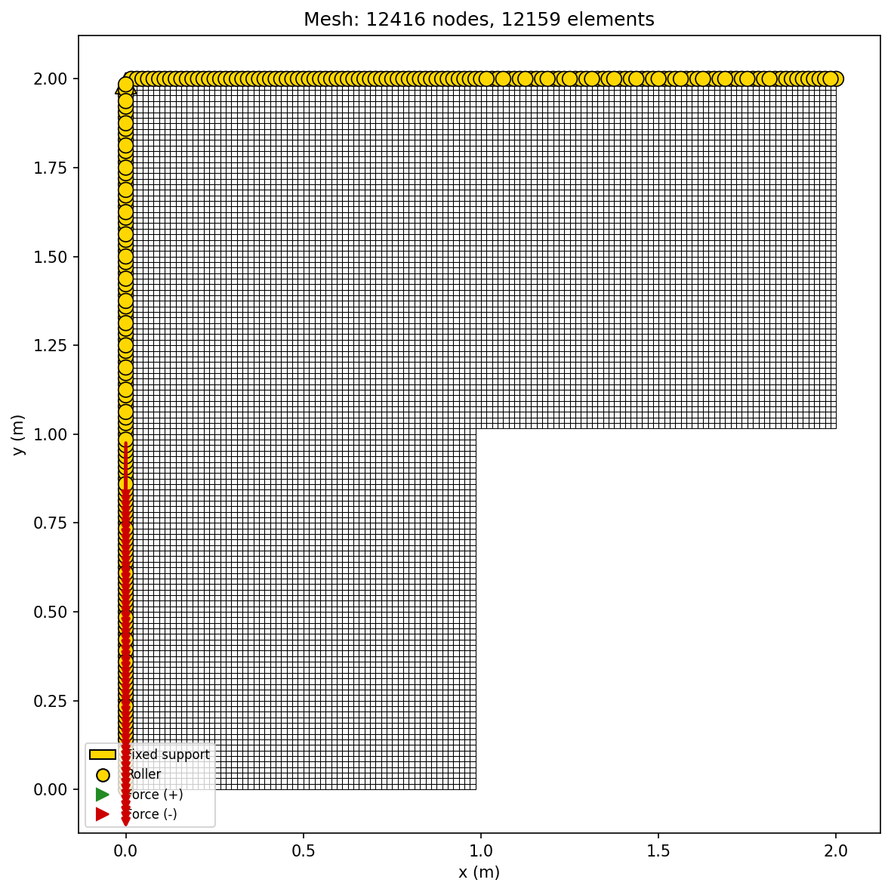
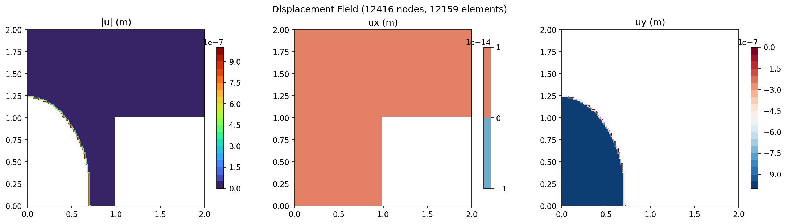
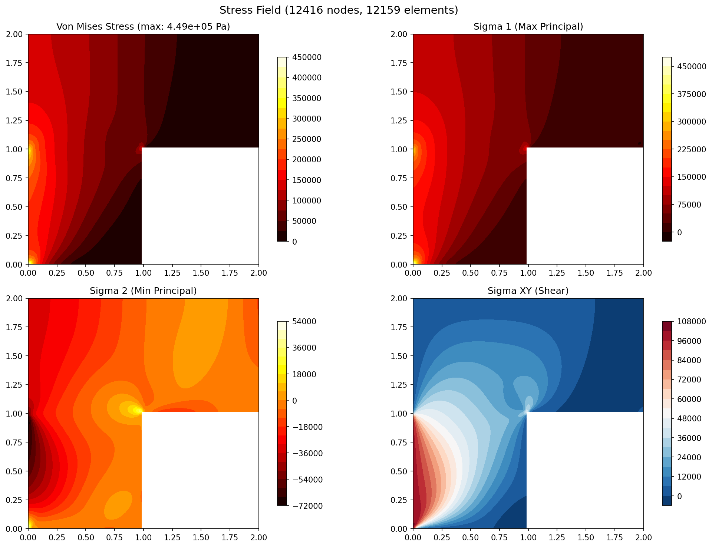
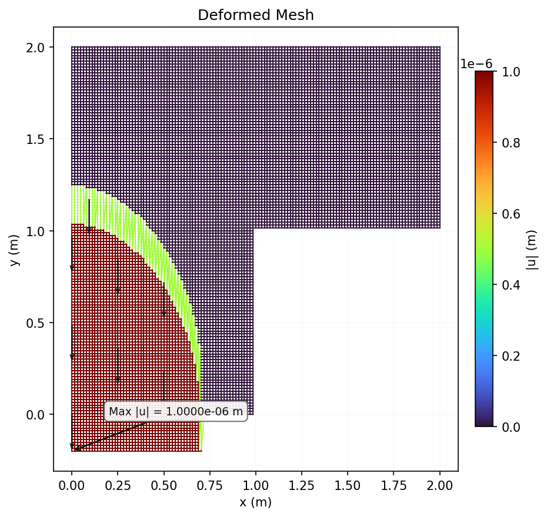
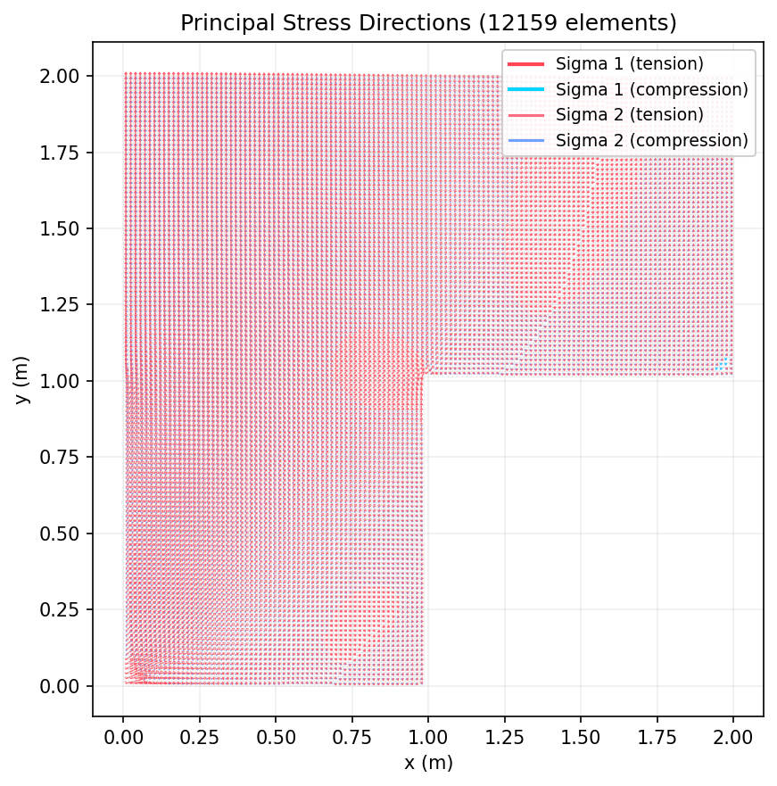

L-Bracket
L-shaped plate with a re-entrant corner stress concentration. Demonstrates the need for mesh refinement near singular points and the behavior of FEA at geometric discontinuities.
Problem Setup
| Parameter | Value |
|---|---|
| Domain | 2.0 x 2.0 m (L-shaped) |
| Cutout | [1, 2] x [0, 1] (bottom-right removed) |
| Young's modulus (E) | 200 GPa (steel) |
| Poisson's ratio (ν) | 0.3 |
| Thickness | 0.01 m |
| Load | P = -1000 N (distributed on left edge below corner) |
Mesh Statistics
| Property | Value |
|---|---|
| Nodes | 800 |
| Elements | 735 |
| Element Type | Q4 (4-node bilinear quadrilateral) |
| DOFs | 1,600 |
| Material | E = 200 GPa, ν = 0.3 |
| Plane Assumption | Plane Stress (t = 0.01 m) |
| Solver | Cholesky (direct) |
| Solve Time | 31.6 ms |
Boundary Conditions
| Type | Location | DOF | Value |
|---|---|---|---|
| Fixed | Top edge (y = 2.0) | uy | 0 |
| Fixed | Left edge (x = 0) | ux | 0 |
| Distributed Load | Left edge below corner (x = 0, y < 1) | Fy | -1000 N / n_nodes per node |
Results
Mesh Quality

Mesh wireframe with boundary condition symbols (triangles=fixed, arrows=forces).
Displacement Contour

Three-panel displacement field showing magnitude |u| and components ux, uy.
Stress Contour

Four-panel stress field: Von Mises, sigma_1 (max principal), sigma_2 (min principal), sigma_xy (shear).
Deformed Mesh

Deformed mesh (cyan) overlaid on original (gray dashed) with displacement vectors. Stress concentration at re-entrant corner.
Principal Stress Directions

Arrow plot showing sigma_1 (red) and sigma_2 (blue) directions. High stress concentration at re-entrant corner.
Expected Behavior
Stress concentration at the re-entrant corner (x=1, y=1). Theoretically, the stress is infinite at a sharp re-entrant corner (singularity). FEA produces a finite but mesh-dependent value that increases with refinement.
| Metric | FEA (32x32) |
|---|---|
| Max von Mises | 2.98e5 Pa |
| Active nodes | 800 |
| Active elements | 735 |
| Solve time | 1413 ms |
Mesh Convergence
h-refinement convergence study for stress concentration at the re-entrant corner. The stress value increases with mesh refinement, confirming the theoretical singularity at sharp corners.
| Mesh | Nodes | Elements | Max von Mises | Solve Time |
|---|---|---|---|---|
| 8x8 | 56 | 39 | 2.17e5 Pa | 2.5 ms |
| 16x16 | 208 | 175 | 2.46e5 Pa | 31.6 ms |
| 32x32 | 800 | 735 | 2.98e5 Pa | 1,466 ms |
| 64x64 | 3,136 | 3,007 | 3.71e5 Pa | 374.5 ms |
| 128x128 | 12,416 | 12,159 | 4.49e5 Pa | 2,549 ms |
Discussion
The L-bracket demonstrates a fundamental FEA limitation: stress singularities at re-entrant corners. The mesh-dependent stress value will increase with mesh refinement but never converge to a single value. This is physically correct -- a sharp corner in a linear elastic model produces infinite stress. In practice, fillets (rounded corners) eliminate the singularity. This case is valuable for showing understanding of mesh convergence limitations and stress singularity behavior.